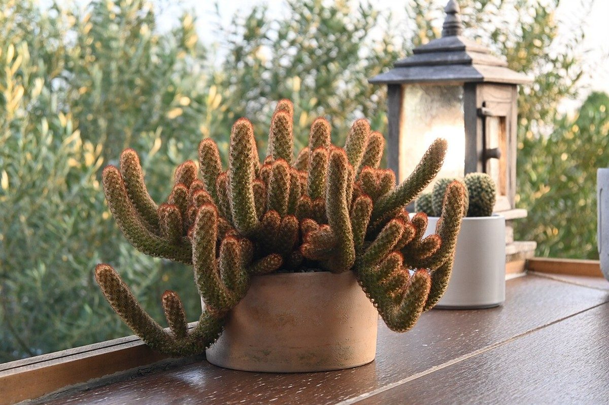
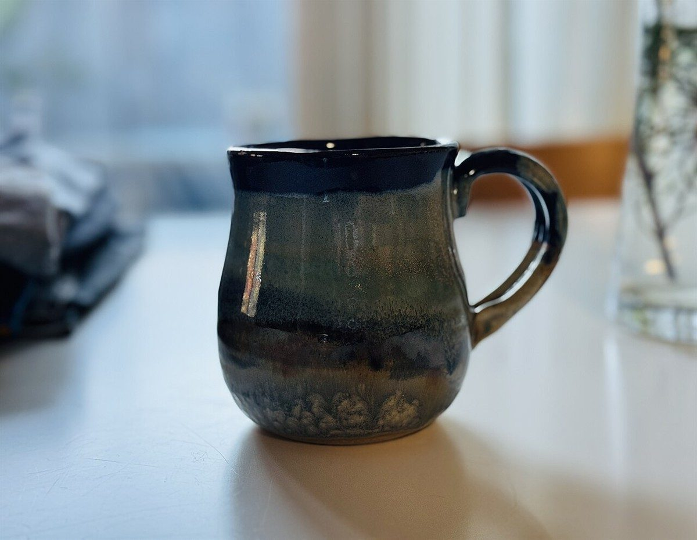
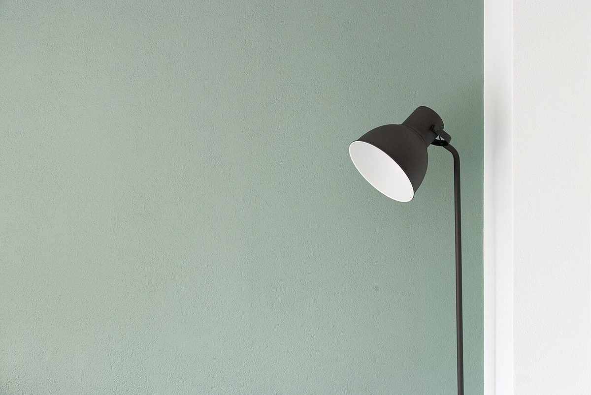

カフェ / 熊本県八代市
小さな基地
暗号手帳 / No.001
L12I9T20T20L12E5
B2A1S19E5
L+I+T+T+L+E = 78 B+A+S+E = 27
熊本県八代市のカフェ「Little Base」のご案内ページです。営業時間やメニューなど詳しいことは準備中。まずはInstagramをのぞいてみてください。

制作側の連想(お店の理念・由来とは無関係)
屋号を、暗号に見立ててみた
「Little Base」は「小さな基地・拠点」とも読める言葉です。店名の由来は分かりません。制作側はそこから、子どものころの秘密基地と、仲間内だけの暗号を連想しました。そこでこのサイトは、屋号の文字を「A=1」の数字に置き換えた「暗号手帳」の作りにしています(L=12、I=9、T=20 …)。お店の理念や由来とは無関係な、制作側の連想です。
基地の備品(イメージ)
もしも基地に棚があるなら
写真は八代市やお店のものではなく、国外または撮影地不明のフリー素材です。備品箱のように並べただけで、お店にあるものを示すものではありません。





確認できていること
お店のこと
| 所在地 | 〒866-0875 熊本県八代市横手新町7-9 |
|---|---|
| 電話 | なし |
| 営業時間 | 準備中 |
| 定休日 | 準備中 |
| ご予約 | 準備中 |
| 駐車場 | 準備中 |
| SNS | Instagram @little_base.yatsushiro |